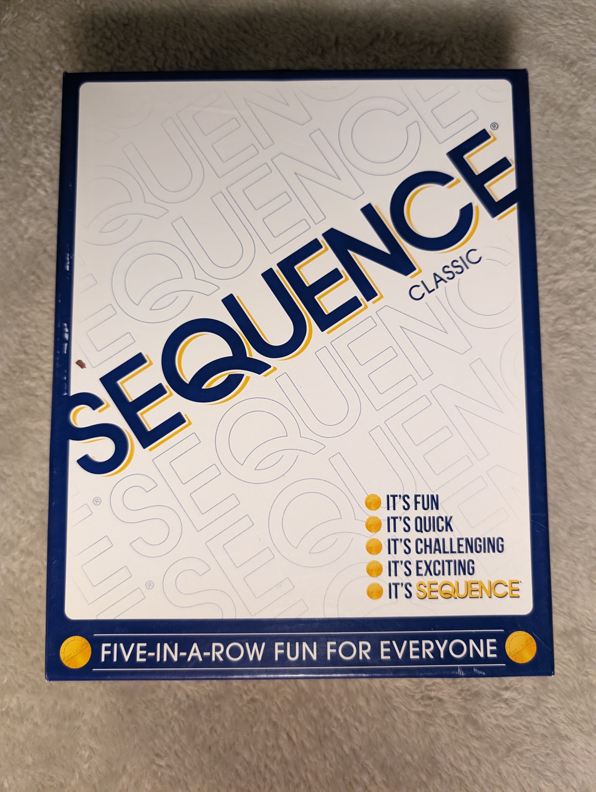

While manning your fire tower you notice smoke in the distance and pull out your
radio to report a blaze growing somewhere in the forest. You must protect your tower
with all the resources at your disposal: dispatch fire engines to combat the blaze,
order air drops of water, and plan the building of firebreaks. Competing fire
departments will complicate your work, using the unrelenting winds to their advantage
in an attempt to safeguard their own towers and threaten yours. The chaotic Firestorm
also stalks the deck and will dramatically swell the flames each time it is drawn.
Will you effectively use your forces to outwit your opponents and survive the inferno?
Can you be the last tower standing?
Players:
2-4
Price:
$35
Length:
15 Minutes

Sequence
Overview:
Sequence is a board and card game. The board shows all the cards (except for the Jacks)
of two (2) standard 52-card decks, laid in a 10 x 10 pattern. The four corners are
free spaces and count for all players equally. The players compete to create rows,
columns or diagonals of 5 connected checkers placed on the cards that the player
has laid down. Two-eyed Jacks are wild, while one-eyed Jacks allow an opponent's
checker to be removed. The game ends when someone has reached a specified number of connections.